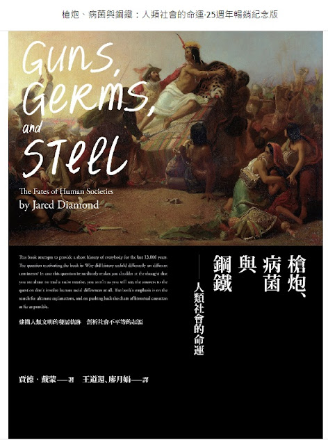

賈德．戴蒙-槍砲、病菌與鋼鐵

賈德．戴蒙-槍砲、病菌與鋼鐵，這本書的名聲響亮，連平常喜歡看小說的我，都聽過這本書的名字，之後也買了這一本書。只是後來都還是以看小說為主，加上還有其他有趣的書想看，就導致這本書一直被我束之高閣。直到後來我發現電子書可以用聽的方式閱讀之後，就想何不利用上班通勤的時間來聽這一本書呢?於是我就利用上班通勤的時間，聽完了這本書。
其實這一本書的中心思想很簡單，就是人類居住/所在的環境決定了後續發展的命運。就像書中一直提到的，為什麼是歐洲的人去殖民美洲，反而不是美洲的人去殖民歐洲呢?很多傳統的理論都刻意注重在文化史料上，導致多數學者認為歐洲的族群可能比較優越，進而可以征服美洲。可是作者卻以演化生物學的角度，發現歐洲因為所在環境具有多種高蛋白質、高營養且馴化過的作物，加上也具有多種馴化的動物(尤其是馬匹)可供使用，這樣的環境造就了可以支撐不事生產的人群，這些人群可以從事各種農業生產的活動，最後自然的可以在文化/文字、科學、藝術、軍事上獲得長足的進步。
反觀其他地區的環境，天生就僅有少數馴化過的作物以及少數馴化的動物，加上沒有馬匹可以使用，這樣的環境自然沒有條件去支撐不事生產的人群，所以就沒有多餘的精力去在文化/文字、科學、藝術、軍事上獲得進步。所以作者也說，並不是因為歐洲人比較優越，只是因為歐洲人運氣好，假設今天兩者互相調換，歐洲人也是會遭遇到同樣落魄的命運。畢竟即便是現在科技如此進步，人類能夠馴化一種植物和動物都非常的困難，更何況是以前的人類?
也正因為歐洲的人類具有先天上絕對的環境優勢，讓歐洲的人口可以迅速成長及擴張，人口越多越密集，就越有機會產生人畜共通的病菌傳播。人類在接觸病菌之後，會漸漸地對病菌產生抵抗力，病菌為了生存，也會產生變異，就這樣周而復始。歐洲人因為對其接觸的病菌有抵抗力，所以比較不會因為病菌而生病或死亡;相反的，美洲大陸因為人口稀少，對病菌的抵抗力較弱，也因此歐洲人在登陸美洲之後，這些對歐洲病菌沒有抵抗力的當地人口，自然地就面臨死亡的命運。
最後作者也分析為什麼一開始技術落後的歐洲，現在反而成為技術的領先者?原因是因為歐洲的特殊地理環境，使各族群之間適度的分隔，並保持相互競爭的關係。因為有競爭關係，若是鄰國有發展新的技術，但是自己沒有發展，很有可能面臨被滅亡的命運。所以為了存活，不僅要學習/趕上鄰國的技術，自己還要發展更先進的技術以維持優勢，就在這樣的相互作用之下，歐洲的技術得以後來居上，成為世界的主宰。而美洲大陸則是過於分散，彼此沒有很明顯的競爭關係，因此不需要發展先進技術以維持領先地位。
中國則是很早就統一，內部及外部並沒有太多的刺激及競爭，因此中國的技術是否要發展，主要端看上位者一個的決定，只要在上位者決定錯誤，就會造成技術落後。但是中國即便技術落後，依舊無損其生存優勢，一直到清末西方列強開始蠶食鯨吞開始，中國才面臨危機。
這本書真的顛覆了以往歷史學家對於人類發展的觀點，我覺得現在研究歷史，真的不能只專注在文獻史料，更應該要想辦法拼湊當時的地理環境、經濟、科技等相關資料，才能拼湊出當時的真正樣貌。
延伸閱讀:
Kindle app-使用iOS語音功能來"聽書"[Kindle]使用Calibre+DeDRM，幫你去除亞馬遜(Amazon)電子書的DRM
[Kindle]讓你的Kindle也可以讀樂天書城（Kobo）的電子書
另外，美國購物代運可參考:
https://a1253247.blogspot.com/p/hopshopgo-vs-spexeshop.html
對板球有興趣的可參考:
https://a1253247.blogspot.com/2022/05/cricket-line-written-by-admin-24-10.html
對生活飲食有興趣，可參考: